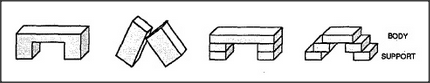
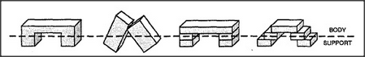

Imagine all the kinds of arches one can build.
How could we capture what's common to so many things with just one single uniframe? Impossible — if we were forced to think of them in terms of blocks and how they're placed. Not one of the expressions we used before applies to all of them: neither three blocks, nor two blocks standing up, nor the supports must not touch. How could we make our minds perceive all these arches as the same? One way would be to draw this imaginary line:
Now, suddenly, all those different arches fit one single frame — of a single Body with two Supports. There are two different ideas here. The first is the idea of dividing an object's description into an essential portion, namely the body, and some auxiliary portions, which correspond to the support. Later we'll see that this is a powerful idea in its own right. The second idea is even more powerful and general: after failing to find a unified description of all those arches, we abandoned the method we were using — and adopted, instead, a quite different style of description. In a word, we reformulated the problem in new terms. We started by using a language that was based on expressing the precise shapes of individual blocks. We replaced this by another language in which we can speak of shapes and outlines that are not confined to those of the blocks themselves.
Reformulation is clearly very powerful — but how does one do it? How do people find new styles of description that make their problems seem easier? Does this depend upon some mysterious kind of insight or upon some magically creative gift — or do we simply come upon them by accident? As I said when discussing creativity, these seem to me mere matters of degree, since people are always making reformulations of various sorts. Even when we contemplate those rarest and most revolutionary new ideas that come like revelations, suddenly to shed new light on entire fields of thought — like evolution, gravity, or relativity — we usually see by hindsight that these were variants of things that people knew before that time. Then we have to ask, instead, for reasons why those reformulations were so long postponed.